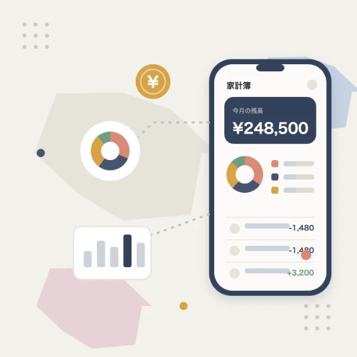

Android 10年以上・Flutter 5年以上の実装力に、Claude Code / GitHub Copilot を用いた仕様書駆動開発を掛け合わせ、企画から実装・リリースまでを圧倒的なスピードで推進するフリーランスのモバイルアプリエンジニアです。品質を落とさず、意思決定と検証に集中できる体制をつくります。
Claude Code / GitHub Copilot を開発フローの中心に据え、「決める → 書く → 検証する」のループを高速回転。仕様のブレをなくし、手戻りを最小化します。
要件定義からPRD・API仕様・画面仕様までをAIと一緒に言語化。実装前に仕様のブレをなくし、後戻りのない開発を実現します。
Claude Code / Copilot をペア相手に実装。定型コードやテスト生成を任せ、設計判断・レビューなど人が担うべき仕事に集中します。
レビュー観点とテスト方針は人がリード。スピードと品質を両立させ、事業のスピード感に開発を合わせます。
アプリリードエンジニアとして牽引した案件を中心に。新規立ち上げ、フルリプレース、長期参画。
招待型SNSサービスを設計・アーキテクチャ導入から牽引。Claude Code を使った仕様書駆動開発を併用し、Liquidによる本人認証、Stripe決済、Firestoreによるリアルタイムチャットを実装しました。
美容系DXスタートアップのCtoCサービスアプリを、Nativeからクロスプラットフォーム（Flutter）へフルリプレース。設計・アーキテクチャ刷新を主導し、既存資産を活かしながらiOS / Androidを単一コードベースに統合しました。
顧客向けと店舗スタッフ向けの2アプリを開発。商品選択から決済、店舗受取までをシームレスに体験できる設計。CI/CDを構築し、gRPC連携やWidgetBook導入でUIコンポーネントを整備しました。
10億円超を調達したスタートアップの医療系アプリを、2週間スプリントのスクラムで約2年にわたり開発。MVVM+Repositoryでの設計を主導し、Webトークン認証やトークンリフレッシュ機構、WebView連携を実装しました。
企画・UI/UX設計・実装・リリース・運用までを一人で担当。家計簿アプリは累計250万ダウンロードを突破。広告・フリーミアム・アプリ内課金でのマネタイズや商標登録まで自ら手がけました。

家計簿 / 250万DL+技術力とリード経験、そしてAIを使いこなす開発力。三つの軸で事業に伴走します。
Androidネイティブ（Kotlin / Java）を10年以上、2021年からはFlutterを主軸に、iOSも含めたクロスプラットフォーム開発を担当。要件に応じて最適な技術・ライブラリを選定します。
0→1の新規アプリから、Nativeアプリの Flutter フルリプレイスまで多数経験。基本設計・アーキテクチャ導入から、ストア申請・Testflight / Firebase 配信まで一貫して推進します。
複数案件でアプリリードエンジニアを担当。設計方針の策定とPRレビューで品質を統括し、開発フローをチームに浸透させてブレのない開発を実現します。
GitHub Actions・Bitrise・AWS を組み合わせ、iOS / Android のビルド・テスト・配信フローを自動化。Firebase Distribution / Testflight への配信まで整え、開発を高速化します。
EMからの技術相談や技術選定・ライブラリ調査にも対応。仕様書のない現場ではリバースエンジニアリングで要件を起こすなど、課題から逆算した提案型の開発で事業に伴走します。
プラットフォームから言語、バックエンド、開発基盤まで。フルスタックにも対応します。
複数社でチームを率いてきました。設計・レビュー・育成・計画づくりまで。
複数案件で基本設計・アーキテクチャ導入・技術選定を主導。設計方針に沿った開発フローをチームに浸透させ、ブレのない開発を確立します。
PRレビュワーとして一貫した設計方針でレビューを実施。ブランチプロテクト設定やマージ運用まで統括し、品質を仕組みで担保します。
GitHub Actions・Bitrise・AWS でビルド/テスト/配信を自動化。Firebase Distribution / Testflight への配信フローまで整備します。
EMからの技術相談や技術選定に対応。設計方針・オンボーディング資料を整備し、チームの立ち上がりを支援します。
15年以上のモバイル開発経験を要約すると。
15年・全17案件を業種で分類。バーは案件の通算月数（兼務含む）を表します。
現在、週30時間程度（週3〜4日相当）の稼働枠を確保できます。即時の参画にも対応可能です。
新規立ち上げ、フルリプレース、AI駆動開発の導入支援まで。まずはお気軽にご連絡ください。